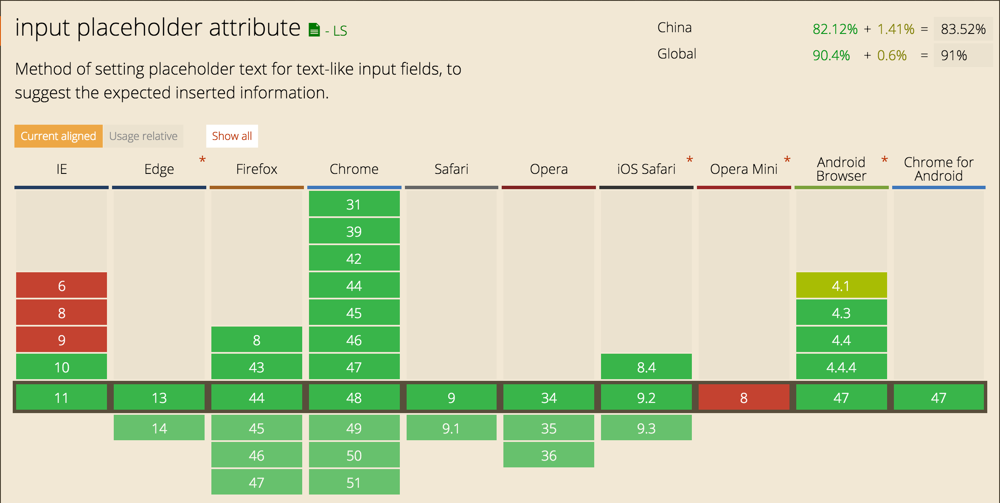

#
blog
Here are 16,185 public repositories matching this topic...
冴羽写博客的地方，预计写四个系列：JavaScript深入系列、JavaScript专题系列、ES6系列、React系列。
-
Updated
Mar 27, 2020
Too young, too simple. Sometimes, naive & stupid 🐌
-
Updated
Apr 19, 2019 - JavaScript
Let's learn a new technology every week. A new technology blog every Sunday in 2016.
-
Updated
Feb 23, 2019 - JavaScript
yxliang01
commented
Aug 23, 2017
I think this would be very useful.
The current template (actually not even a template) is meant to be deleted right after the document is created... Which makes create new document a little bit more complex than it should be.
Thanks
2
rohit-gohri
commented
May 22, 2019
As the project grows, it would be easier to contribute if the project follows a specific javascript style guide.
These are what I use in my personal projects:
Linter: https://github.com/eslint/eslint
Config: https://www.npmjs.com/package/eslint-config-airbnb
But any other would work too
youngwind
commented
Feb 27, 2016
问题
placeholder属性是html5的新属性，IE9及以下不支持。

解决办法
github上有很多placeholder的解决方案，我尝试了Placeholders.js。
使用方法
安装
bower install placeholders --save
使用
<script src="{path}/placeho
xflcx1991
commented
Sep 3, 2019
A lightweight blog CMS for PHP
-
Updated
Feb 17, 2020 - PHP
alexfinnarn
commented
Jun 24, 2019
Describe the bug
GitHub provides a few options when configuring a new repo like: license, .gitignore file, a README.md, and the Rennovate plugin. If you want to install any of these by default, which I usually do, then you get an error about the remote having newer content.
To Reproduce
Steps to reproduce the behavior:
- Create a repo with a readme during the script
- See the er
记录成长的过程
-
Updated
Mar 31, 2020 - JavaScript
Open
Linters
varHarrie
commented
Oct 29, 2018
Linters
JavaScript
$ npm i -D eslint-config-standard eslint-plugin-standard eslint-plugin-promise eslint-plugin-import eslint-plugin-node// .eslintrc
{
"extends": ["standard"]
}TypeScript
$ npm i -D tslint tslint tslint-config-standard// tslint.json
{
"extends": [
"tslint:latest",
"tslint-config-stan
cssmagic
commented
Jul 27, 2018
前言
ESLint 是目前最主流、最强大的 JS 代码校验工具。当我们的代码触发了 ESLint 的报警规则时，ESLint 就会提示错误。
本系列文章将详细讲解那些需要手工介入修复的 ESLint 规则，帮助你顺利地把既有代码迁移到 ESLint 的保护之中。
no-empty
禁止出现空代码块，比如
if/else/for/catch等代码块都在报警之列。
比如下面这个判断语句，if 块就是空的：
if (foo) {
} else {
bar()
}我们把判断条件反转一下，就可以消灭掉空的 if 块了。代码还更简练些：
if (!foo) {
bar()
}在某些情况下，判断条件
SandroRiz
commented
Oct 7, 2019
After setup my blog (BlogEngine.net 3.3.8.0 on IIS 8.0) to use https I cannot publish anymore a post. Neither I cannot re-add my blog after remove it.
When I try to do, I receive this error
Open Live Writer
Can't connect to your blog service:
Network Connection Error - Error attempting to connect to blog at:
http://www.myDomain.com
mili 是一个开源的社区系统，界面优雅，功能丰富😛
-
Updated
Mar 9, 2020 - JavaScript
crguezl
commented
Jan 23, 2020
¡¡Thanks for this amazing app!!
When installing in one of my blogs https://ull-mii-sytws-1920.github.io/ I followed the instructions at
https://utteranc.es/?installation_id=#Number&setup_action=install
and initially didn't work. Looking at the dev tools I saw the complaining about not having the file utterances.json and so I added one
Improve this page
Add a description, image, and links to the blog topic page so that developers can more easily learn about it.
Add this topic to your repo
To associate your repository with the blog topic, visit your repo's landing page and select "manage topics."
Description
Add
proseWrap: neverto the prettier config options for markdown files in thedocs/directory (or all files if so inclined). Also add it to the prettier config of gatsby-i18n-sourceMotivation
The [Translation Style Guide](https://www.gatsbyjs.org/contributing/translation/style-guide/#use-so